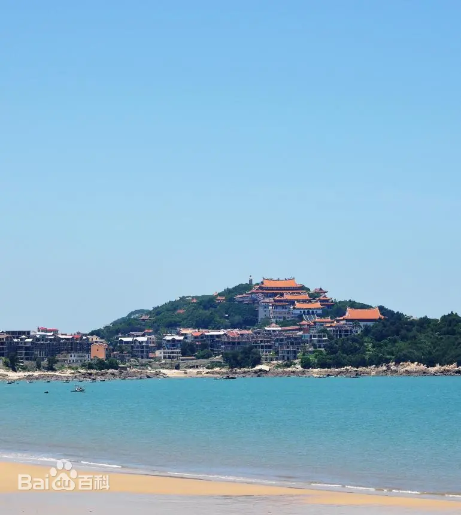

湄洲岛
湄洲岛，福建省莆田市秀屿区湄洲镇辖岛，位于福建省莆田市中心东南42公里，距大陆仅1.82海里，是莆田市第二大岛， 是妈祖的成神地。湄洲岛陆域面积14.35平方公里，人口3.8万，年均气温21℃。包括大小岛、屿、礁30多个。距台湾省台中港72海里。全岛南北长9.6公里，东西宽1.3公里，中部为平原，海岸线长30.4公里。 全镇包括乌丘都使用莆田话，其南为莆田乌丘乡。 湄洲岛是“海上和平女神”妈祖的故乡，妈祖文化的发祥地，素有“南国蓬莱”美称，既有扣人心弦的湄屿潮音、湄洲祖庙、九宝澜黄金沙滩、“小石林”鹅尾怪石等风景名胜30多处，更有近3亿妈祖信众信仰的妈祖祖庙，每年农历三月廿三妈祖诞辰日和九月初九妈祖升天日期间，朝圣旅游盛况空前，被誉为“东方麦加”。 1998年湄洲岛被辟为福建省对外开放旅游经济区，1992年设立国家旅游度假区，2020年12月被列入国家AAAAA级风景名胜区。
